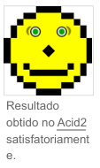

Cascading Style Sheets
Cascading Style Sheets (abreviado CSS) é um mecanismo para adicionar estilos (cores, fontes, espaçamento, etc.) a uma página web,[1] aplicado diretamente nas tags HTML ou ficar contido dentro das tags < style >. Também é possível, adicionar estilos adicionando um link para um arquivo CSS que contém os estilos. Assim, quando se quiser alterar a aparência dos documentos vinculados a este arquivo CSS, basta modifica-lo.
Com a variação de atualizações dos navegadores, o suporte ao CSS pode variar. A interpretação dos navegadores pode ser avaliada com o teste Acid2, que se tornou uma forma base de revelar quão eficiente é o suporte de CSS, fazendo com que a nova versão em desenvolvimento do Firefox seja totalmente compatível a ele, assim como o Opera já é. O Doctype informado, ou a ausência dele, determina oquirks mode ou o strict mode, modificando o modo como o CSS é interpretado e a página desenhada.
Sintaxe

CSS tem uma sintaxe simples, e utiliza uma série de palavras em inglês para especificar os nomes de diferentes propriedade de estilo de uma página.
Uma instrução CSS consiste em um seletor e um bloco de declaração. Cada declaração contém uma propriedade e um valor, separados por dois pontos (:). Cada declaração é separada por ponto e vírgula (;).[2]
Em CSS, seletores são usados para declarar a quais elementos de marcação um estilo se aplica, uma espécie de expressão correspondente. Os seletores podem ser aplicados a todos os elementos de um tipo específico, ou apenas aqueles elementos que correspondam a um determinado atributo; elementos podem ser combinados, dependendo de como eles são colocados em relação uns aos outros no código de marcação, ou como eles estão aninhados dentro do objeto de documento modelo.
Pseudoclasse é outra forma de especificação usada em CSS para identificar os elementos de marcação, e, em alguns casos, ações específicas de usuário para o qual um bloco de declaração especial se aplica. Um exemplo frequentemente utilizado é o hover pseudoclasse que se aplica um estilo apenas quando o usuário 'aponta para' o elemento visível, normalmente, mantendo o cursor do mouse sobre ele. Isto é anexado a um seletor como em a:hover ou #elementid:hover. Outras pseudoclasses e pseudoelementos são, p. ex., first-line, visited ou before. Uma pseudoclasse especialé: lang(c), "c".
Uma pseudoclasse seleciona elementos inteiros, tais como:link ou :visited, considerando que um pseudoelemento faz uma seleção que pode ser constituída por elementos parciais, tais como:first-line ou :first-letter.
Seletores podem ser combinados de outras formas também, especialmente em CSS 2.1, para alcançar uma maior especificidade e flexibilidade.
Aqui está um exemplo que resume as regras acima:
selector [, selector2, ...][:pseudo-class] {
property: value;
[property2: value2;
...]
}
/* comment *
Seletores
Definição de estilo é um conjunto de propriedades visuais para um elemento, o CSS define regras que fazem as definições de estilo casarem com um elemento ou grupo de elemento, o documento pode conter um bloco de CSS num elemento style ou usando o elemento link apontando para um arquivo externo que contenha o bloco CSS.
Para uso com o CSS, foi criado o atributo class que todo elemento pode conter.
As regras de casamento para o CSS são chamadas de seletores, uma definição de estilo pode ser casada com um seletor ou um grupo de seletores separados por vírgula, um seletor pode casar um elemento por:
- elemento do tipo: element_name { style definition; }
- elemento do tipo com a classe: element_name.class_name { style definition; }
- todos os elementos com a classe: .class_name { style definition; }
- o elemento com o id: #id_of_element { style definition; }
- casamento de um grupo: element_name_01, element_name_02, .class_name { style definition; }
Exemplo
p text-align: right; color: #BA2;
p.minhaclasse01 color:#ABC;
.minhaclasse02 color:#CAD;
# iddomeuelemento color:#ACD;
p.minhaclasse03 .minhaclasse04 { color:#ACD; }
Exemplos
/* comentário em css, semelhante aos da linguagem c */
body
{
font-family: Arial, Verdana, sans-serif;
background-color: #FFF;
margin: 5px 10px;
}
O código acima define fonte padrão Arial, caso não exista, substitui por Verdana, caso não exista, define qualquer fonte sans-serif. Define também a cor de fundo do corpo da página.
Sua necessidade adveio do fato do HTML, aos poucos, ter deixado de ser usado apenas para criação de conteúdo na web, e portanto havia uma mistura de formatação e conteúdo textual dentro do código de uma mesma página. Contudo, na criação de um grande portal, fica quase impossível manter uma identidade visual, bem como a produtividade do desenvolvedor. É nesse ponto que entra o CSS.
As especificações do CSS podem ser obtidas no site da W3C "World Wide Web Consortium", um consórcio de diversas empresas que buscam estabelecer padrões para a Internet.
É importante notar que nenhum navegador suporta igualmente as definições do CSS. Desta forma, o web designer deve sempre testar suas folhas de estilo em navegadores de vários fabricantes, e preferencialmente em mais de uma versão, para se certificar de que o que foi codificado realmente seja apresentado da forma desejada.
Exemplo de CSS aplicado em XML
Arquivo *.XML com ligação para uma folha de estilos em cascata:
Tuesday 20 June
6:00
News
With Michael Smith and Fiona Tolstoy.
Followed by Weather with Malcolm Stott.
6:30
Regional news update
Local news for your area.
7:00
Unlikely suspect
Whimsical romantic crime drama starring Janet
Hawthorne and Percy Trumpp.
O arquivo *.CSS que formata o XML anterior:
@media screen {
schedule {
display: block;
margin: 10px;
width: 300px;
}
date {
display: block;
padding: 0.3em;
font: bold x-large sans-serif;
color: white;
background-color: #C6C;
}
programme {
display: block;
font: normal medium sans-serif;
}
programme > * { /* All children of programme elements */
font-weight: bold;
font-size: large;
}
title {
font-style: italic;
}
}
CSS e JavaScript
Pop-up não-bloqueável
<<<<<<< HEAD
>html<
>head<
>style type="text/css"<
#popup position: absolute;
top: 30%;
left: 30%;
width: 300px;
height: 150px;
padding: 20px 20px 20px 20px;
border-width: 2px;
border-style: solid;
background: #ffffa0;
display: none;
>/style<
>script type="text/javascript"<
function abrir() {
document.getElementById('popup').style.display = 'block';
setTimeout ("fechar()", 3000);
}
function fechar() {
document.getElementById('popup').style.display = 'none';
}
>/script<
>/head< <br<
>body onload="abrir()" <>br<
>div id="popup" class="popup"<>br<
Esse é um exemplo de popup utilizando o elemento>code<div>/code<. Dessa maneira esse >br<
pop-up não será bloqueado.>br<
>small>[X]
>/div>
>a href="javascript: abrir();">Abrir pop-up
>a href="javascript: fechar();">Fechar pop-up
>/body>
>/html>
=======
>html<
>head<
>style type="text/css"<
#popup position: absolute;
top: 30%;
left: 30%;
width: 300px;
height: 150px;
padding: 20px 20px 20px 20px;
border-width: 2px;
border-style: solid;
background: #ffffa0;
display: none;
>/style<
>script type="text/javascript"<
function abrir() {
document.getElementById('popup').style.display = 'block';
setTimeout ("fechar()", 3000);
}
function fechar() {
document.getElementById('popup').style.display = 'none';
}
>/script<
>/head< <br<
>body onload="abrir()" <>br<
>div id="popup" class="popup"<>br<
Esse é um exemplo de popup utilizando o elemento>code<div>/code<. Dessa maneira esse >br<
pop-up não será bloqueado.>br<
>small< >a href="javascript: fechar();"<[X]>/a<>/small<>br<
>/div<>br<
>a href="javascript: abrir();"<Abrir pop-up>/a<>br<
>a href="javascript: fechar();"<Fechar pop-up
>/body< >br<
>/html<>br<
>>>>>>> 3bdc3b6086184ee94d5fbc55e5aa8f8f16fb6d90
Padronização
Frameworks
Os frameworks CSS são bibliotecas pré-preparadas destinadas a permitir um estilo mais fácil e mais compatível com os padrões de páginas da web usando a linguagem Cascading Style Sheets. Os frameworks CSS incluem Blueprint, Bootstrap, Cascade Framework, Foundation e Materialize. Assim como as bibliotecas de linguagem de programação e script, os frameworks CSS São geralmente incorporados como planilhas .css externas referenciadas no HTML . Eles fornecem uma série
de opções prontas para projetar e fazer o layout da página da web. Embora muitos desses frameworks tenham sido publicados, alguns autores os usam principalmente para prototipagem rápida, ou para aprender com, e preferem 'criar' CSS apropriado para cada site publicado sem a sobrecarga de design, manutenção e download de muitos recursos não utilizados no estilo do site[4].
Metodologias de design
Conforme o tamanho dos recursos CSS usados em um projeto aumenta, uma equipe de desenvolvimento geralmente precisa decidir sobre uma metodologia de design comum para mantê los organizados. Os objetivos são facilidade de desenvolvimento, facilidade de colaboração durante o desenvolvimento e desempenho das folhas de estilo implementadas no navegador. As metodologias populares incluem OOCSS (CSS orientado a objeto), ACSS (CSS atômico), oCSS (folha de estilo em cascata orgânica), SMACSS (arquitetura escalável e modular para CSS) e BEM (bloco, elemento, modificador)[5].
Ver também
- Acid2
- Javascript
- HTML
- HTML5
- Padrões web
- Tableless
- XHTML
Referências
- «Cascading Style Sheets» (https://www.w3.org/Style/CSS/). www.w3.org (em inglês). Consultado em 8 de setembro de 2020
- «W3C CSS2.1 specification for rule sets, declaration blocks
and selectors» (http://www.w3.org/TR/CSS21/syndata.html#q10). W3.org. Consultado em 8 de setembro de 2020
- Ver a definição completa de seletores no website W3C (http://www.w3.org/TR/CSS21/selector.html).
- Cederholm, Dan; Marcotte, Ethan (9 de abril de 2010).
Handcrafted CSS: More Bulletproof Web Design (https://books.google.pl/books?id=UgrUeIwsS60C&pg=PA114&redir_esc=y#v=onepage&q&f=false) (em inglês). [S.l.]: New Riders
- «OOCSS, ACSS, BEM, SMACSS: what are they? What should I use? – clubmate.fi» (https://web.archive.org/web/20150602231126/http://clubmate.fi/oocss-acss-bem-smacss-what-are-they what-should-i-use/). web.archive.org. 2 de junho de 2015.Consultado em 29 de março de 2021
Ligações externas
- «Página oficial» (https://www.w3.org/Style/CSS/) (em inglês)
- «W3C CSS Specification» (https://www.w3.org/TR/CSS/) (em inglês)
- «Serviço de validação de CSS do W3C» (https://jigsaw.w3.org/css-validator/)
- «Aprenda a estilizar HTML utilizando CSS» (https://developer.mozilla.org/pt-BR/docs/Learn/CSS). Guia na MDN Web Docs
Obtida de "https://pt.wikipedia.org/w/index.php?title=Cascading_Style_Sheets&oldid=70327923"